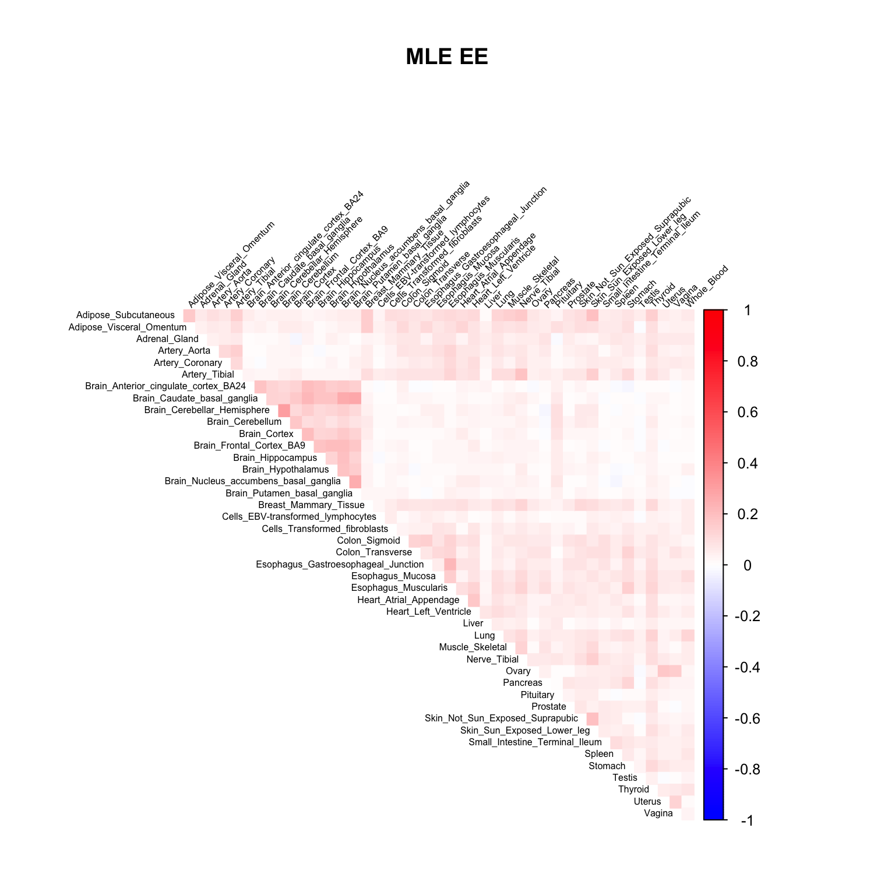
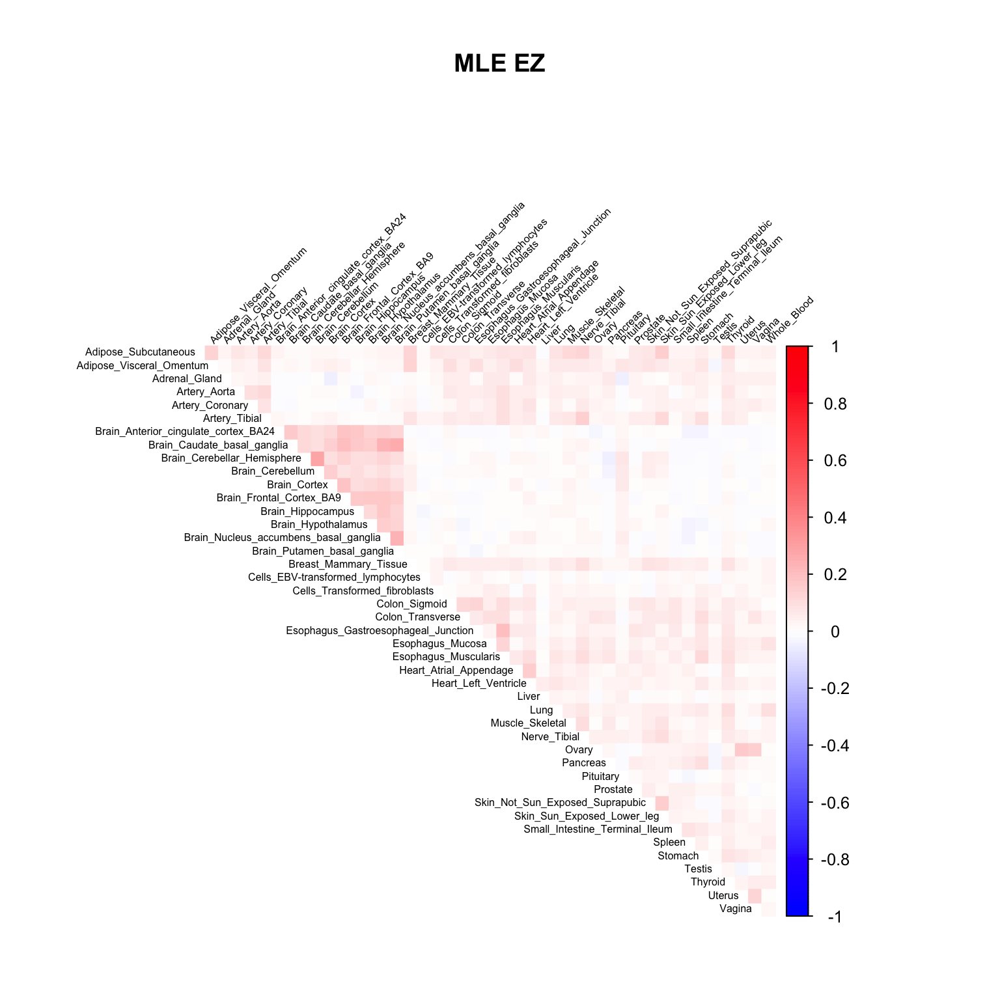
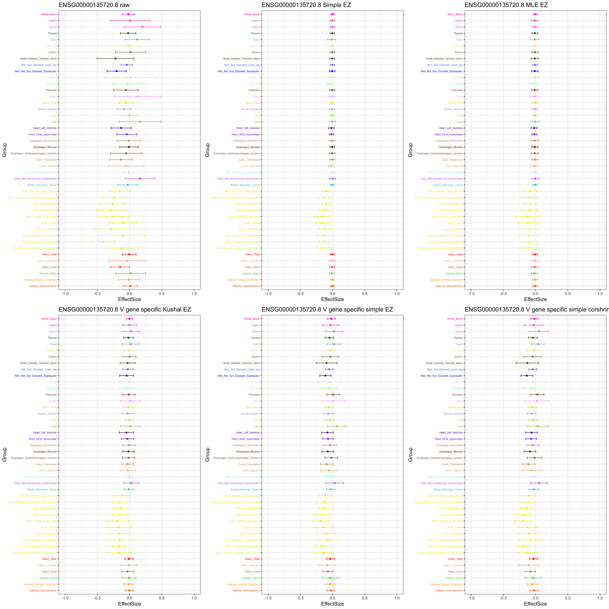
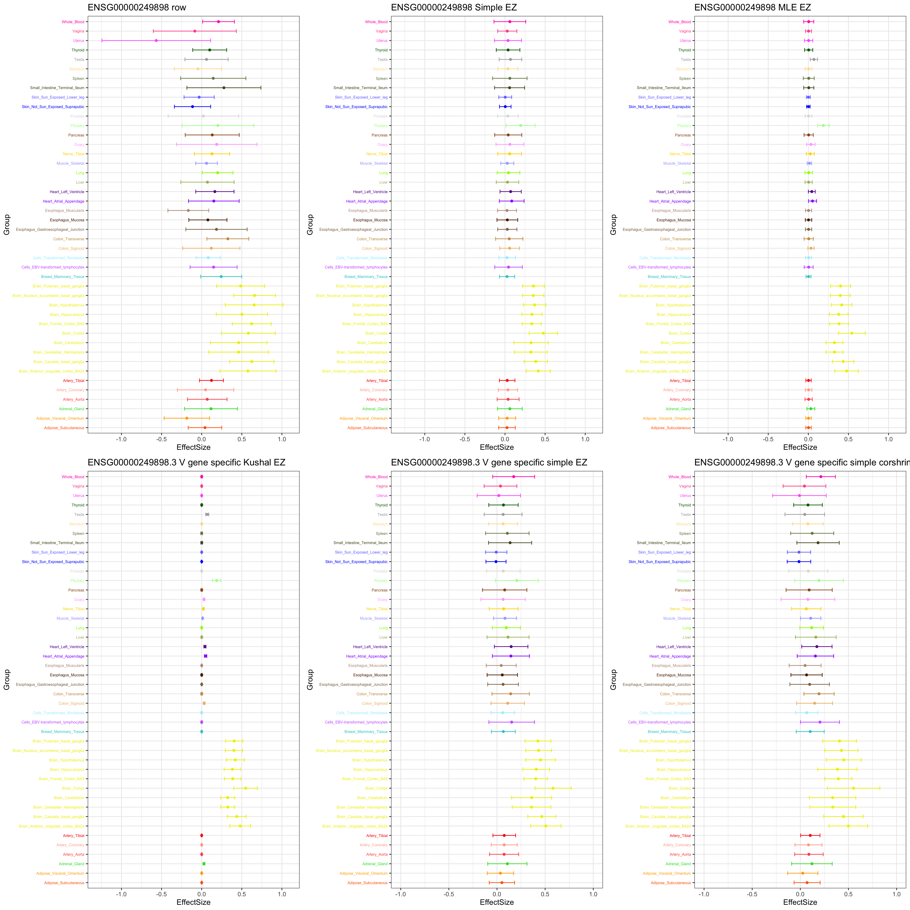
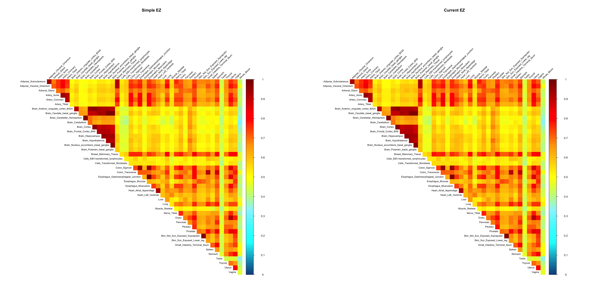

GTEx V6
Yuxin Zou
2018-12-20
Last updated: 2019-01-27
workflowr checks: (Click a bullet for more information)-
✔ R Markdown file: up-to-date
Great! Since the R Markdown file has been committed to the Git repository, you know the exact version of the code that produced these results.
-
✔ Environment: empty
Great job! The global environment was empty. Objects defined in the global environment can affect the analysis in your R Markdown file in unknown ways. For reproduciblity it’s best to always run the code in an empty environment.
-
✔ Seed:
set.seed(20181220)The command
set.seed(20181220)was run prior to running the code in the R Markdown file. Setting a seed ensures that any results that rely on randomness, e.g. subsampling or permutations, are reproducible. -
✔ Session information: recorded
Great job! Recording the operating system, R version, and package versions is critical for reproducibility.
-
Great! You are using Git for version control. Tracking code development and connecting the code version to the results is critical for reproducibility. The version displayed above was the version of the Git repository at the time these results were generated.✔ Repository version: 378989c
Note that you need to be careful to ensure that all relevant files for the analysis have been committed to Git prior to generating the results (you can usewflow_publishorwflow_git_commit). workflowr only checks the R Markdown file, but you know if there are other scripts or data files that it depends on. Below is the status of the Git repository when the results were generated:
Note that any generated files, e.g. HTML, png, CSS, etc., are not included in this status report because it is ok for generated content to have uncommitted changes.Ignored files: Ignored: .Rhistory Ignored: .Rproj.user/ Ignored: analysis/figure/ Untracked files: Untracked: .DS_Store Untracked: code/Demo_SumstatQuery.R Untracked: code/flash_fcn.R Untracked: data/.DS_Store Untracked: data/cor_tissues_non_ash_voom_pearson.rda Untracked: data/gene_names_GTEX_V6.txt Untracked: data/genewide_ash_out_tissue_mat_halfuniform_non_mode.rda Untracked: data/order_index.rda Untracked: data/samples_id.txt Untracked: data/tissuewide_pearson_halfuniform_tissuewide_non_mode.rda Untracked: dsc-mash-gtex/ Untracked: output/.DS_Store Untracked: output/GTExV6/ Untracked: output/GTExV6pipeline/ Untracked: output/corshrink_noise_gene_1.rds
Expand here to see past versions:
| File | Version | Author | Date | Message |
|---|---|---|---|---|
| Rmd | 378989c | zouyuxin | 2019-01-27 | wflow_publish(“analysis/GTExV6pipeline.Rmd”) |
library(mashr)Loading required package: ashrlibrary(knitr)
library(kableExtra)
library(ggplot2)
library(gridExtra)gtex <- readRDS(gzcon(url("https://github.com/stephenslab/gtexresults/blob/master/data/MatrixEQTLSumStats.Portable.Z.rds?raw=TRUE")))
missing.tissues <- c(7, 8, 19, 20, 24, 25, 31, 34, 37)
gtex.colors <- read.table("https://github.com/stephenslab/gtexresults/blob/master/data/GTExColors.txt?raw=TRUE", sep = '\t', comment.char = '')[-missing.tissues, 2]
gtex.colors <- as.character(gtex.colors)
gene.names = as.character(read.table('data/gene_names.txt')[,1])The results are from mashr_flashr_pipeline. We include the data driven covariance matrices based on the first three principal components and factors from flash.
Flash model based on effects:
factors = readRDS('output/GTExV6pipeline/MatrixEQTLSumStats.Portable.Z.EE.flash.model.rds')$factors
par(mfrow = c(2, 3))
for(k in 1:13){
barplot(factors[,k], col=gtex.colors, names.arg = FALSE, axes = FALSE, main=paste0("Factor ", k))
}


Flash model based on z scores:
factors = readRDS('output/GTExV6pipeline/MatrixEQTLSumStats.Portable.Z.EZ.flash.model.rds')$factors
par(mfrow = c(2, 3))
for(k in 1:18){
barplot(factors[,k], col=gtex.colors, names.arg = FALSE, axes = FALSE, main=paste0("Factor ", k))
}


# read model
m_simple_EE = readRDS('output/GTExV6pipeline/MatrixEQTLSumStats.Portable.Z.EE.FL_PC3.mash_model_V_simple.rds')
m_simple_EE$result = readRDS('output/GTExV6pipeline/MatrixEQTLSumStats.Portable.Z.EE.FL_PC3.mash_model_V_simple.posterior.rds')
m_simple_EZ = readRDS('output/GTExV6pipeline/MatrixEQTLSumStats.Portable.Z.EZ.FL_PC3.mash_model_V_simple.rds')
m_simple_EZ$result = readRDS('output/GTExV6pipeline/MatrixEQTLSumStats.Portable.Z.EZ.FL_PC3.mash_model_V_simple.posterior.rds')
m_mle_EE = readRDS('output/GTExV6pipeline/MatrixEQTLSumStats.Portable.Z.EE.FL_PC3.mash_model_V_mle.rds')
m_mle_EE$result = readRDS('output/GTExV6pipeline/MatrixEQTLSumStats.Portable.Z.EE.FL_PC3.mash_model_V_mle.posterior.rds')
m_mle_EZ = readRDS('output/GTExV6pipeline/MatrixEQTLSumStats.Portable.Z.EZ.FL_PC3.mash_model_V_mle.rds')
m_mle_EZ$result = readRDS('output/GTExV6pipeline/MatrixEQTLSumStats.Portable.Z.EZ.FL_PC3.mash_model_V_mle.posterior.rds')Estimated null cor V
V.simple = readRDS('output/GTExV6pipeline/MatrixEQTLSumStats.Portable.Z.EE.FL_PC3.V_simple.rds')
corrplot::corrplot(V.simple, method='color', type='upper', tl.col="black", tl.srt=45, tl.cex = 0.5, diag = FALSE, col=colorRampPalette(c("blue", "white", "red"))(200), cl.lim = c(-1,1), title = 'Simple', mar=c(0,0,5,0))
# dev.off()
V.mle.EE = readRDS('output/GTExV6pipeline/MatrixEQTLSumStats.Portable.Z.EE.FL_PC3.V_mle.rds')
corrplot::corrplot(V.mle.EE, method='color', type='upper', tl.col="black", tl.srt=45, tl.cex = 0.5, diag = FALSE, col=colorRampPalette(c("blue", "white", "red"))(200), cl.lim = c(-1,1), title = 'MLE EE', mar=c(0,0,5,0))
V.mle.EZ = readRDS('output/GTExV6pipeline/MatrixEQTLSumStats.Portable.Z.EZ.FL_PC3.V_mle.rds')
corrplot::corrplot(V.mle.EZ, method='color', type='upper', tl.col="black", tl.srt=45, tl.cex = 0.5, diag = FALSE, col=colorRampPalette(c("blue", "white", "red"))(200), cl.lim = c(-1,1), title = 'MLE EZ', mar=c(0,0,5,0))
Results
logliks = c(get_loglik(m_simple_EE), get_loglik(m_mle_EE))
logliks_EZ = c(get_loglik(m_simple_EZ), get_loglik(m_mle_EZ))
tmp = cbind(logliks, logliks_EZ)
row.names(tmp) = c('Simple', 'MLE')
colnames(tmp) = c('EE', 'EZ')
tmp %>% kable() %>% kable_styling()| EE | EZ | |
|---|---|---|
| Simple | 936478.4 | 937254.7 |
| MLE | 940058.8 | 940457.4 |
par(mfrow=c(1,2))
barplot(get_estimated_pi(m_simple_EE), las=2, cex.names = 0.7, main = 'Simple EE')
barplot(get_estimated_pi(m_mle_EE), las=2, cex.names = 0.7, main = 'MLE EE')
barplot(get_estimated_pi(m_simple_EZ), las=2, cex.names = 0.7, main = 'Simple EZ')
barplot(get_estimated_pi(m_mle_EZ), las=2, cex.names = 0.7, main = 'MLE EZ')
Number of significant:
numsig_EE = c(length(get_significant_results(m_simple_EE)),
length(get_significant_results(m_mle_EE)))
numsig_EZ = c(length(get_significant_results(m_simple_EZ)),
length(get_significant_results(m_mle_EZ)))
tmp = cbind(numsig_EE, numsig_EZ)
row.names(tmp) = c('Simple', 'MLE')
colnames(tmp) = c('EE', 'EZ')
tmp %>% kable() %>% kable_styling()| EE | EZ | |
|---|---|---|
| Simple | 13068 | 13519 |
| MLE | 12654 | 12986 |
The gene significant in simple EZ, not in current EZ:
ind = setdiff(get_significant_results(m_simple_EZ), get_significant_results(m_mle_EZ))[9]
stronggene = data.frame(gtex$strong.b[ind,])
colnames(stronggene) = 'EffectSize'
stronggene$Group = row.names(stronggene)
stronggene$se = gtex$strong.s[ind,]
p1 = ggplot(stronggene, aes(y = EffectSize, x = Group)) +
geom_point(show.legend = FALSE, color=gtex.colors) + coord_flip() + ggtitle(paste0(gene.names[ind], ' raw')) + ylim(c(-1,1)) + geom_errorbar(aes(ymin=EffectSize-1.96*se, ymax=EffectSize+1.96*se), width=0.4, show.legend = FALSE, color=gtex.colors) +
theme_bw(base_size=12) + theme(axis.text.y = element_text(colour = gtex.colors, size = 6))
stronggeneSimple = data.frame(m_simple_EZ$result$PosteriorMean[ind,])
colnames(stronggeneSimple) = 'EffectSize'
stronggeneSimple$Group = row.names(stronggeneSimple)
stronggeneSimple$se = m_simple_EZ$result$PosteriorSD[ind,]
p2 = ggplot(stronggeneSimple, aes(y = EffectSize, x = Group)) +
geom_point(show.legend = FALSE, color=gtex.colors) + coord_flip() + ggtitle(paste0(gene.names[ind],' Simple EZ')) + ylim(c(-1,1)) +
geom_errorbar(aes(ymin=EffectSize-1.96*se, ymax=EffectSize+1.96*se), width=0.4, show.legend = FALSE, color=gtex.colors) +
theme_bw(base_size=12) + theme(axis.text.y = element_text(colour = gtex.colors, size = 6))
stronggeneMLE = data.frame(m_mle_EZ$result$PosteriorMean[ind,])
colnames(stronggeneMLE) = 'EffectSize'
stronggeneMLE$Group = row.names(stronggeneMLE)
stronggeneMLE$se = m_mle_EZ$result$PosteriorSD[ind,]
p3 = ggplot(stronggeneMLE, aes(y = EffectSize, x = Group)) +
geom_point(show.legend = FALSE, color=gtex.colors) + ylim(c(-1,1)) + coord_flip() + ggtitle(paste0(gene.names[ind],' MLE EZ')) +
geom_errorbar(aes(ymin=EffectSize-1.96*se, ymax=EffectSize+1.96*se), width=0.4, show.legend = FALSE, color=gtex.colors) +
theme_bw(base_size=12) + theme(axis.text.y = element_text(colour = gtex.colors, size = 6))
grid.arrange(p1, p2, p3, nrow = 1)
The gene MCPH1:
stronggene = data.frame(gtex$strong.b[13837,])
colnames(stronggene) = 'EffectSize'
stronggene$Group = row.names(stronggene)
stronggene$se = gtex$strong.s[13837,]
p1 = ggplot(stronggene, aes(y = EffectSize, x = Group)) +
geom_point(show.legend = FALSE, color=gtex.colors) + coord_flip() + ggtitle('ENSG00000249898 row') + ylim(c(-1.3,1.1)) + geom_errorbar(aes(ymin=EffectSize-1.96*se, ymax=EffectSize+1.96*se), width=0.4, show.legend = FALSE, color=gtex.colors) +
theme_bw(base_size=12) + theme(axis.text.y = element_text(colour = gtex.colors, size = 6))
stronggeneSimple = data.frame(m_simple_EZ$result$PosteriorMean[13837,])
colnames(stronggeneSimple) = 'EffectSize'
stronggeneSimple$Group = row.names(stronggeneSimple)
stronggeneSimple$se = m_simple_EZ$result$PosteriorSD[13837,]
p2 = ggplot(stronggeneSimple, aes(y = EffectSize, x = Group)) +
geom_point(show.legend = FALSE, color=gtex.colors) + ylim(c(-1.3,1.1)) + coord_flip() + ggtitle('ENSG00000249898 Simple EZ') +
geom_errorbar(aes(ymin=EffectSize-1.96*se, ymax=EffectSize+1.96*se), width=0.4, show.legend = FALSE, color=gtex.colors) +
theme_bw(base_size=12) + theme(axis.text.y = element_text(colour = gtex.colors, size = 6))
stronggeneMLE = data.frame(m_mle_EZ$result$PosteriorMean[13837,])
colnames(stronggeneMLE) = 'EffectSize'
stronggeneMLE$Group = row.names(stronggeneMLE)
stronggeneMLE$se = m_mle_EZ$result$PosteriorSD[13837,]
p3 = ggplot(stronggeneMLE, aes(y = EffectSize, x = Group)) +
geom_point(show.legend = FALSE, color=gtex.colors) + coord_flip() + ggtitle('ENSG00000249898 MLE EZ') + ylim(c(-1.3,1.1)) +
geom_errorbar(aes(ymin=EffectSize-1.96*se, ymax=EffectSize+1.96*se), width=0.4, show.legend = FALSE, color=gtex.colors) +
theme_bw(base_size=12) + theme(axis.text.y = element_text(colour = gtex.colors, size = 6))
grid.arrange(p1, p2, p3, nrow = 1)
The pairwise sharing by magnitude
par(mfrow = c(1,2))
clrs=colorRampPalette(rev(c('darkred', 'red','orange','yellow','cadetblue1', 'cyan', 'dodgerblue4', 'blue','darkorchid1','lightgreen','green', 'forestgreen','darkolivegreen')))(200)
x <- get_pairwise_sharing(m_simple_EZ)
colnames(x) <- colnames(get_lfsr(m_simple_EZ))
rownames(x) <- colnames(x)
corrplot::corrplot(x, method='color', type='upper', tl.col="black", tl.srt=45, tl.cex = 0.7, diag = FALSE, col=clrs, cl.lim = c(0,1), title = 'Simple EZ', mar=c(0,0,5,0))
x <- get_pairwise_sharing(m_mle_EZ)
colnames(x) <- colnames(get_lfsr(m_mle_EZ))
rownames(x) <- colnames(x)
corrplot::corrplot(x, method='color', type='upper', tl.col="black", tl.srt=45, tl.cex = 0.7, diag = FALSE, col=clrs, cl.lim = c(0,1), title = 'Current EZ', mar=c(0,0,5,0))
Session information
sessionInfo()R version 3.5.1 (2018-07-02)
Platform: x86_64-apple-darwin15.6.0 (64-bit)
Running under: macOS 10.14.2
Matrix products: default
BLAS: /Library/Frameworks/R.framework/Versions/3.5/Resources/lib/libRblas.0.dylib
LAPACK: /Library/Frameworks/R.framework/Versions/3.5/Resources/lib/libRlapack.dylib
locale:
[1] en_US.UTF-8/en_US.UTF-8/en_US.UTF-8/C/en_US.UTF-8/en_US.UTF-8
attached base packages:
[1] stats graphics grDevices utils datasets methods base
other attached packages:
[1] gridExtra_2.3 ggplot2_3.1.0 kableExtra_1.0.1 knitr_1.20
[5] mashr_0.2.19.0555 ashr_2.2-26
loaded via a namespace (and not attached):
[1] tidyselect_0.2.5 corrplot_0.84 purrr_0.2.5
[4] lattice_0.20-38 colorspace_1.4-0 htmltools_0.3.6
[7] viridisLite_0.3.0 yaml_2.2.0 rlang_0.3.1
[10] R.oo_1.22.0 mixsqp_0.1-93 pillar_1.3.1
[13] withr_2.1.2 glue_1.3.0 R.utils_2.7.0
[16] bindrcpp_0.2.2 bindr_0.1.1 foreach_1.4.4
[19] plyr_1.8.4 stringr_1.3.1 munsell_0.5.0
[22] gtable_0.2.0 workflowr_1.1.1 rvest_0.3.2
[25] R.methodsS3_1.7.1 mvtnorm_1.0-8 codetools_0.2-16
[28] evaluate_0.12 labeling_0.3 pscl_1.5.2
[31] doParallel_1.0.14 parallel_3.5.1 highr_0.7
[34] Rcpp_1.0.0 readr_1.3.1 backports_1.1.3
[37] scales_1.0.0 rmeta_3.0 webshot_0.5.1
[40] truncnorm_1.0-8 abind_1.4-5 hms_0.4.2
[43] digest_0.6.18 stringi_1.2.4 dplyr_0.7.8
[46] grid_3.5.1 rprojroot_1.3-2 tools_3.5.1
[49] magrittr_1.5 lazyeval_0.2.1 tibble_2.0.1
[52] crayon_1.3.4 whisker_0.3-2 pkgconfig_2.0.2
[55] MASS_7.3-51.1 Matrix_1.2-15 SQUAREM_2017.10-1
[58] xml2_1.2.0 assertthat_0.2.0 rmarkdown_1.11
[61] httr_1.4.0 rstudioapi_0.9.0 iterators_1.0.10
[64] R6_2.3.0 git2r_0.24.0 compiler_3.5.1 This reproducible R Markdown analysis was created with workflowr 1.1.1